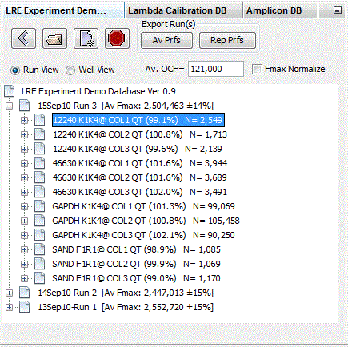
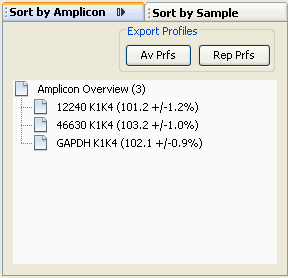

It is recommended that once an initial understanding of the program has been obtained, the demonstration database files be opened in order to provide a hands-on introduction to LRE using high quality datasets. It is also recommended that before attempting to analyze your own datasets, Implementing LRE-based Assays be consulted.
The user interface is organized into three panels, each containing windows that provide functions for viewing and/or editing of data:
The Explorer Panel provides three windows for viewing data from each of the three LRE database types:

Once a database file is opened, its data is presented as a tree. Selecting a data element within the tree will trigger the corresponding Editing Window to appear within the Editing Panel (see below).
See the Explorer Panel Overview for a more detailed description.
The Editing Panel located in the center of the user interface, contains two windows for editing of either profiles or amplicons:
Profile Editor:
Amplicon Editor:
Depending on which database is displayed in the Explorer Panel and what type of data element is selected, the corresponding editing window will open to display information about the data element, much of which can be edited.
The profile editing window provides the core functionality of the LRE Analyzer and is the most complex, comprised of a number of panels that display information about the selected profile. See the Profile Editor Window page for a detailed overview. The Amplicon Database Window and Amplicon Editor Window provide details of how the amplicon editor window functions.
The Sorting Panel located on the right side of the user interface, contains two windows that allow viewing of amplification profiles, sorted by either amplicon or sample. These windows become functional when either an Experiment or Calibration database is displayed in the Explorer Panel

Selecting one of these data elements will display, within the Explorer Panel, a list of all profiles generated with the selected amplicon or sample. This in turn allows review/editing or export of a subset of profiles contained within the database, irrespective of the Run in which they were generated.
Note also that the amplicon/sample labels provide the average amplification efficiency generated across all of the corresponding profiles. To return to viewing runs, select the "Run View" button within the explorer window. See the Sorting Panel Overview for a more detailed description.
See also:
User Interface
Data Import
Data Export
Uninstalling the Program